Übergeordneter Verband
Wolken der Dämmerung
Aufseher Gilde
84 angeschlossene Fraktionen
Alerias Gesellschaften Das Fraktionsregister
Bünde, Banner & verborgene Mächte
Wem gilt Euer Schwur?
Entdeckt die Gemeinschaften, die Aleria prägen – ihre Zeichen, ihre Zugehörigkeiten und die Mächte, unter denen sie stehen.
Fünf Wege der Zugehörigkeit 224 Einträge
 Die Kirche
Die KircheEin Zeichen erzählt, wohin man gehört.
Das Wappenverzeichnis
Folgt einem Namen, einem Banner oder einem der fünf Wege.
224 Einträge in fünf Bereichen
Versucht einen anderen Namen oder öffnet wieder das gesamte Register.
Kapitel I Handwerk, Handel & Abenteuer
Die Gildenfraktionen ordnen sich den Wolken der Dämmerung unter. Unter diesem gemeinsamen Dach bestehen eigene Gilden, Zünfte und Verbände – manche mit weiteren Untergilden und Bannern.
Kapitel II Glaube, Lehre & Rittertum
Die Orden gliedern sich unter die kirchliche Gewalt. Kirchliche Zweige, autonome Gemeinschaften und lokale Unterorden bleiben als eigene Verbände erkennbar. Die Alerische Kirche und ihre Glaubenslehre sind im Religionscodex beschrieben.
Kirchliche Gewalt
5 angeschlossene Fraktionen
Zum Religionscodex zu Die Alerische Kirche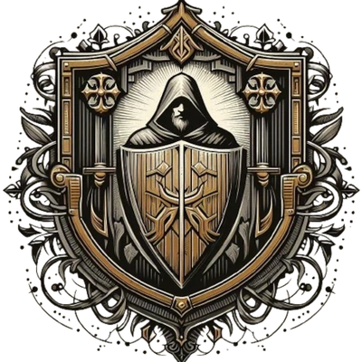
Monastischer Zweig
Akademischer Zweig
Militärischer Zweig
Buß-Zweig
Monastischer Zweig
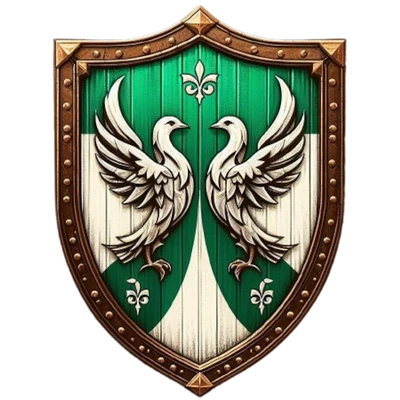
Missionar & Anti-Sklaverei Orden
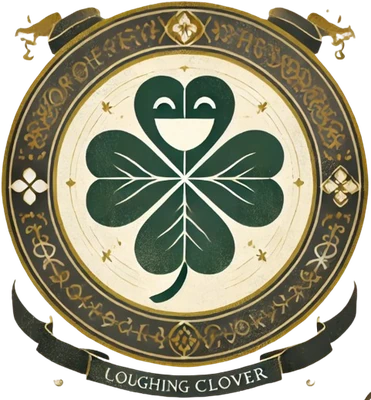
Karitativer Orden
Inquisitions Orden
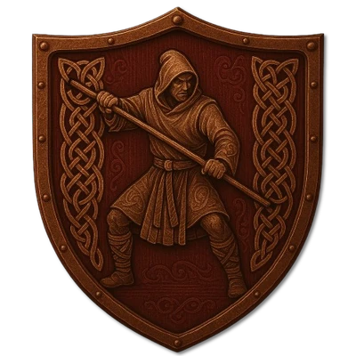
Kampfmönch Orden
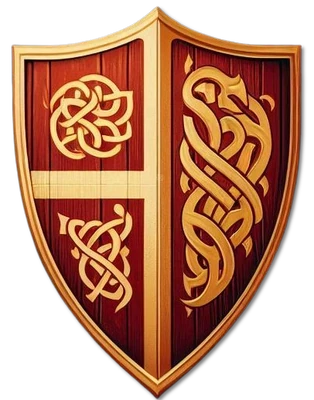
Geistlich-weltlicher Ritterorden der Alben
5 angeschlossene Fraktionen
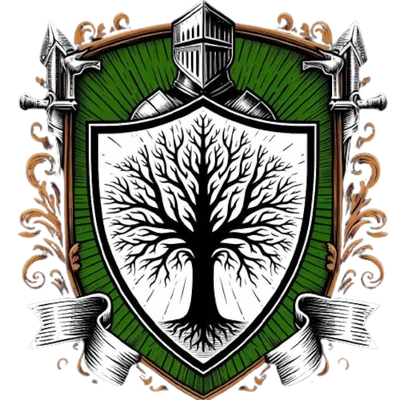
Leitheach
Aislearneach
Dunfal
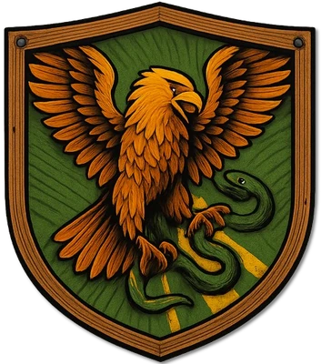
Blaithneach
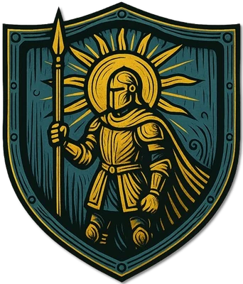
Uathneach
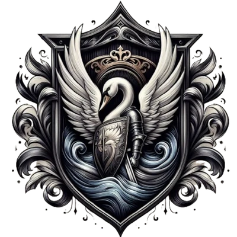
Ritterlicher Zweig der Kirche
6 angeschlossene Fraktionen
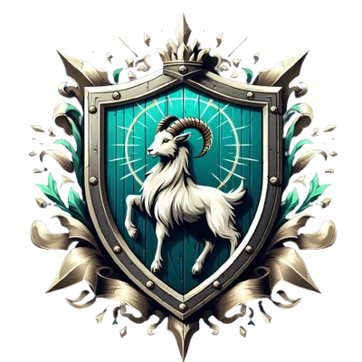
Morgorn
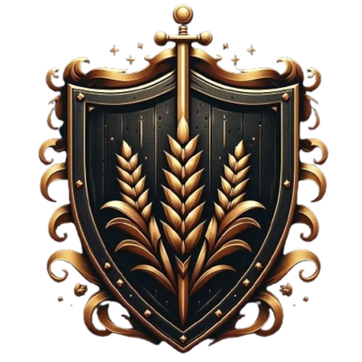
Weisenfluh
Kent
Baldreska
Aldrimar
Kaisereich Argentum
Mathringischer Ritter Orden
Weiblicher Ritter Orden
Globaler Ritter Orden
Lichthain
Fahrende Ritter
Lokaler Ritterorden
Lokaler Ritterorden
Antiker Orden
Magier Orden
Magier Orden
Magier Orden
Magier Orden
Magier Orden
Magier Orden
Magier Orden
Magier Orden Aldrimars
Magierzirkel/ Loge
Kapitel III Logen, Institute & Institutionen
Organisationen stehen für sich oder sind in einem Land institutionalisiert. Akademien, Logen, fürstliche Einrichtungen und Widerstandsgruppen folgen ihren eigenen Aufgaben und Bindungen.
Magische Loge
Magische Loge
Alchemistisches Institut
Medizinisches Institut
Magisches Institut
Magische Loge
Akademisches Institut
Akademisches Institut
Akademisches Institut
Akademisches Institut
Handelskammer
Sklaven Institut
Kaiserliche Judikative
Klerikale Institution
Kaiserliche Handelskammer
Akademische Institution
Klerikale Institution
Klerikale Institution
Militärische Institution
Wirtschaftliche Institution
Klerikale Institution
Karitative Institution
Militärische Institution
Widerstandsbewegung
6 angeschlossene Fraktionen

Primäres Banner
Banner
Banner
Banner
Banner
Banner
Söldnergilde
Kaufmanns Organisation
Unterhaltungs Organisation
Philosophisches Institut
Spionage Zweig
Ehrengarde
Märtyrer Institut
Kapitel IV Syndikate, Schatten & schwarze Banner
Die dunklen Gilden stehen unter der Loge der Dämmerung. Ihr Gefolge, die Piratenbanner und die örtlichen Bünde bilden unterschiedliche Zweige dieser Unterwelt; lokale Eigenständigkeit bleibt dabei sichtbar.
Kapitel V Verehrung, Häresie & verborgene Zirkel
Kulte stehen für sich. Selbst die Anhänger derselben Gottheit sind in eigene Fraktionen und Glaubensrichtungen gespalten. Die Zuordnung zu einer infernalen Macht bezeichnet ihre Verehrung, keine gemeinsame Führung.
Eigenständige Kulte dieser Gottheit
Eigenständige Kulte dieser Gottheit
Okkulter Zirkel
Eigenständige Kulte dieser Gottheit
Nordischer "Orden"
Ketzerischer Kult
Kemetara Pantheon
Ketzerische Fanatiker
Eigenständige Kulte dieser Gottheit
Okkulter Vampirkult
Eigenständige Kulte dieser Gottheit
Ketzerischer Kult
Eigenständige Kulte dieser Gottheit
Hedonistische Loge
Eigenständige Kulte dieser Gottheit
Infernaler Kult
Verborgene Zirkel, die Nyxaras Nacht, Schatten und geheime Pfade verehren.
Gottheit & Kult zu Die Schleier der NachtEigenständige Kulte dieser Gottheit
Infernaler Kult
Eigenständige Gemeinschaften um Adar, den Zweifel und die Geheimnisse des Großen Spalts.
Gottheit & Kult zu Kinder des SpaltsEigenständige Kulte dieser Gottheit
Ketzerischer Kult
Eigenständige Kulte dieser Gottheit
Kannibalistischer Kult
Eigenständige Kulte dieser Gottheit
Infernaler Kult
Kultisten der Meerestiefen, der Ertrunkenen und der verlorenen Seelen im Namen Thraals.
Gottheit & Kult zu Der Ertrunkene ChorEigenständige Kulte dieser Gottheit
Infernaler Kult
Verschwiegene Gemeinschaften, die Nemsaras Rache und Hinterlist zu ihrem Glaubensweg machen.
Gottheit & Kult zu Die Dornen der VergeltungEigenständige Kulte dieser Gottheit
Infernaler Kult
Getrennte Zirkel zwischen entfesselter Freude und tiefer Verzweiflung; vereint allein in der Verehrung des Zweigesichtigen.
Gottheit & Kult zu Kinder des Zerrissenen SpiegelsEigenständige Kulte dieser Gottheit
Infernaler Kult
Kultgemeinschaften um Migdals Verheißungen, Sehnsüchte und den Preis eines Wunsches.
Gottheit & Kult zu Bund der letzten WünscheEigenständige Kulte dieser Gottheit
Infernaler Kult
Zirkel des Verseuchers, die Krankheit und Verderbnis als Zeichen Nergaloths verehren.
Gottheit & Kult zu Bruderschaft des Fahlen KeimsEigenständige Kulte dieser Gottheit
Infernaler Kult
Abgeschlossene Gemeinschaften im Zeichen Syressas, der steinernen Gefolgschaft und der verweigerten Zuflucht.
Gottheit & Kult zu Hüter der Verschlossenen ZufluchtEigenständige Kulte dieser Gottheit
Infernaler Kult
Lose Kultgemeinschaften um Nhaera, die Einsamkeit und das Preisgeben der eigenen Heimkehr.
Gottheit & Kult zu Die HeimkehrlosenEigenständige Kulte dieser Gottheit
Infernaler Kult
Traumzirkel, die Nymhra im sanften Schlaf und im Vergessen schmerzlicher Erinnerungen suchen.
Gottheit & Kult zu Der Sanfte SchleierEigenständige Kulte dieser Gottheit
Infernaler Kult
Eigenständige Zirkel, die Gerüchte und veränderte Geschichten als Maelachs Offenbarungen verbreiten.
Gottheit & Kult zu Stimmen der Tausend MünderAntiker Kult
Nekromantischer Kult
Spöttischer "Ritterorden"